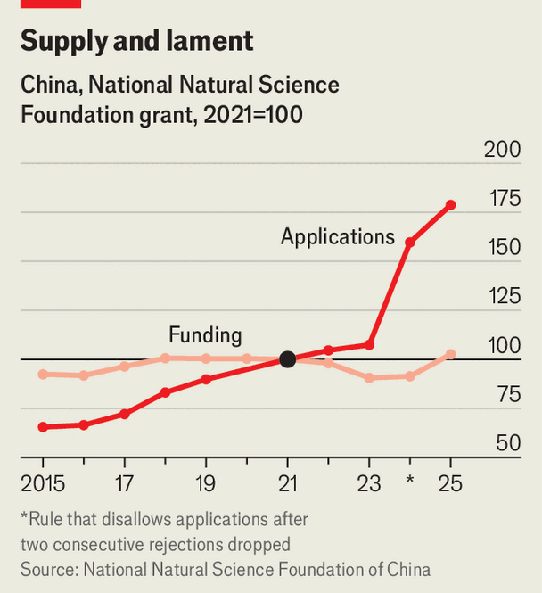

China’s universities are rich. But they're getting squeezed
Researchers can’t escape a bleak economy
Oct 22nd 2026
In its competition with China, America sometimes commits self-sabotage. Under Donald Trump, cuts in federal support for universities have been particularly damaging. To convey their anguish, some American scientists have drawn attention to the advantage that their country’s strategic rival may gain from these retrenchments. China has been handed the future “on a silver platter”, complained one academic from Harvard University last year.
In China there is plenty of funding for academics who are engaged in cutting-edge research in fields favoured by the Communist Party such as artificial intelligence and robotics. But the Harvard academic may be surprised to learn that on many campuses, the mood among staff is sullen. Eager though the party is to promote scientific endeavour, it is becoming more selective about who gets the state’s cash. In April the education ministry said that it had revoked 12,200 degree programmes in recent years, mainly in soft subjects such as “business management”, replacing many with majors in AI and other sciences that are the party’s priorities.
But departments involved in subjects such as physics and chemistry are also feeling the pinch. This decade’s spending by central and local governments on science and technology has grown annually at just 3.5%, slumping from 10% in the late 2010s. Such outlays cover everything from museums to social sciences, but government spending on natural-science departments is also growing more slowly. Some university budgets are being cut. In September Peking University in Beijing was one of several to issue new orders to “practise thrift and tighten belts”. At some institutions researchers’ pay and perks are being reduced.
Since the 1990s China’s universities have expanded rapidly and the living conditions of academic staff have become far more comfortable. The international stature of the country’s universities has also soared. In 2017 just two of them were among the world’s top 100, according to Times Higher Education, a British magazine. This year eight were, including Tsinghua University and Peking University which ranked 11th and 13th globally—the highest of any in Asia.
To Chinese academics who have long been used to good times, the belt-tightening has come as a painful shock. Even some of the country’s 75 elite universities, which are funded by the central government, are being squeezed. Their median budget grew 6.8% this year, but one in five suffered cuts. Some have more than halved the number and value of scholarships for postgraduate programmes.
China’s weaker economy is in part to blame. Other than top-tier ones, many universities depend heavily on financing from local governments whose budgets are being crimped by a prolonged slump in the property market. Local authorities are responsible for 95% of the country’s 2,900 universities. Documents reviewed by The Economist show that even in Shenzhen and Hangzhou, both big hubs of party-backed tech, universities have had their budgets cut by more than 5% this year.
The economy is still growing at 4.5%. But it cannot create enough new jobs to absorb record numbers of graduates: youth unemployment is 19%. So more are staying on campus. The annual intake of doctoral students has nearly doubled since 2019 to 200,000. Those who remain in academia have to compete for shrinking shares of government money. Post-doctoral work has become insecure and, as one academic puts it, requirements for promotion are turning “inhumane”.

Academics often need a grant to move up the ladder. Since 2021 applications to the main grant programme of the National Natural Science Foundation of China—the principal source of central-government funding for sciences—have risen by 80% to 200,000 (see chart). But the amount disbursed has climbed by only 3%. Success rates for applications fell from 22% in 2013 to 12% last year. This year the foundation has boosted handouts to young researchers by 50%—in part, maybe, to assuage their discontent.
Restoring happiness will be difficult. Increasingly, universities are adopting Western styles of employment, with academics often having to labour for years before being granted a permanent job, says Qiang Zha of York University. Some complain that, because of tighter budgets, universities are hiring junior staff to bolster research with no intention of giving them a permanent place. Getting a job or promotion in academia is now such a struggle that many quit. Shenzhen Middle School employs more than 100 staff with PhDs.
As the party’s main mouthpiece, People’s Daily, pointed out last month, China’s universities are not “running out of money”. In aggregate, at least, they are getting more: spending on university research rose by 11% last year, to 341bn yuan ($47bn), according to official figures. But companies, including non-state ones, are providing a growing share of that cash. In 2024, the most recent year for which data exist, they supplied half of new funding for research at universities. But they have little interest in supporting scholarship that is unlikely to nurture the talent and technologies that will help them commercially. And they prefer well-funded big-name universities.
There may be some benefit in tight-fistedness. When China’s universities were rapidly expanding, promotion was often linked to the quantity of material published rather than quality, says Yu Xie of Princeton, who also runs a centre at Peking University. Now money-conscious universities have to be more discerning and produce more breakthroughs.
But, as one academic notes, the pressure to publish papers creates an incentive for fraud. “Paper mills” advertise their services on popular e-commerce sites such as Taobao. Some researchers have been caught paying bribes to get their work published. Online sleuths (including dropouts from doctoral study) have been ferreting out academic malfeasance in order to topple professors from their posts. A few provincial governments are investigating a practice whereby academics pay companies to fund their research to meet grant quotas for promotion. In a small government survey, one-fifth of respondents admitted to the practice.
Junior academics mostly grind away at their research with poor prospects for long-term employment. Some, however, will climb to the top of the academic pile. As it does in the country’s export sector, ferocious competition can help produce champion ideas. ■
Subscribers can sign up to Drum Tower, our new weekly newsletter, to understand what the world makes of China—and what China makes of the world.